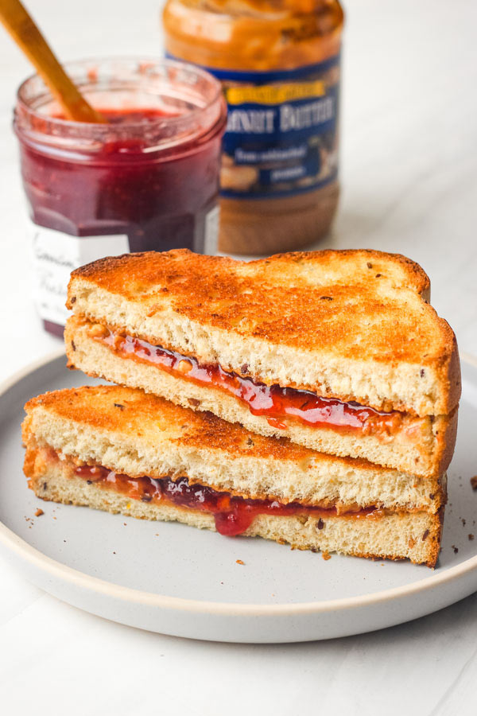

Grilled PBJ Recipe

Description
This is peanut butter and jelly with a twist..
Ingredients
- 2 teaspoons butter
- 2 slices white bread
- 1 teaspoon peanut butter
- 2 teaspoons any flavour jelly
Steps
- Heat griddle or skillet to 350 degrees F (175 degrees C).
- Spread butter on one side of each slice of bread. Spread peanut butter on unbuttered side of one slice of bread, and jelly on the other. Place one slice, buttered side down on the griddle. Top with other slice, so that peanut butter and jelly are in the middle. Cook for 4 minutes on each side, or until golden brown, and heated through.